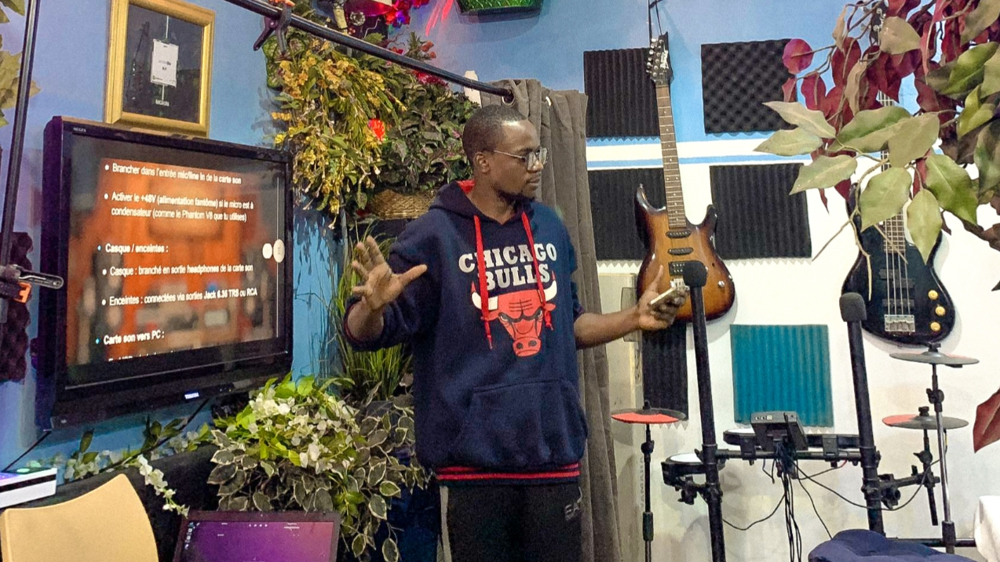
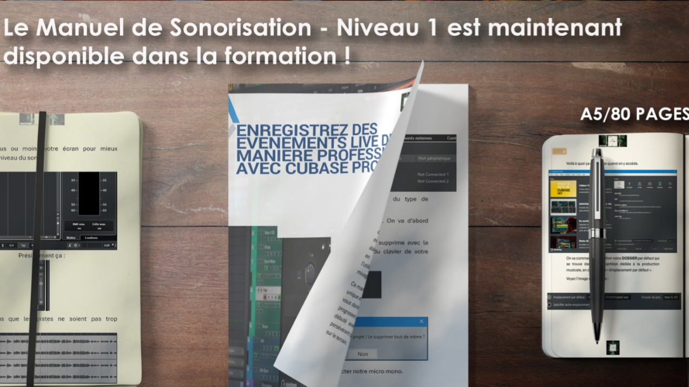

Nos Formations

📍 Formation en Présentiel
Participez à des sessions physiques dans notre studio équipé. Vous bénéficiez d’un suivi direct, d’exercices pratiques et d’interactions réelles pour progresser rapidement.

🎥 Formation en Vidéo
Suivez nos cours en ligne à votre rythme. Les vidéos sont claires, détaillées et accessibles partout, que vous soyez à la maison ou en déplacement.

📚 Formation par Lecture (PDF) + Assistance
Recevez des documents PDF complets et structurés. En complément, profitez d’une assistance personnalisée pour répondre à vos questions et lever vos blocages.